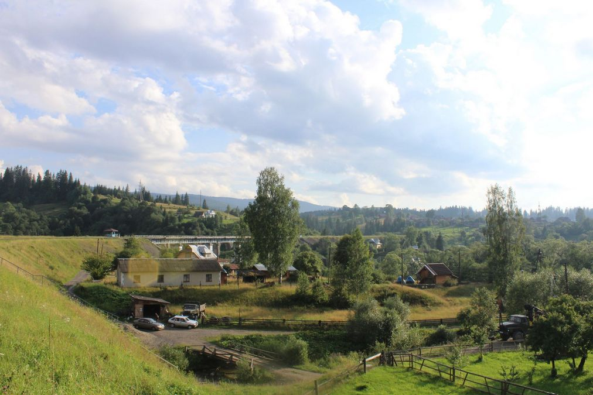
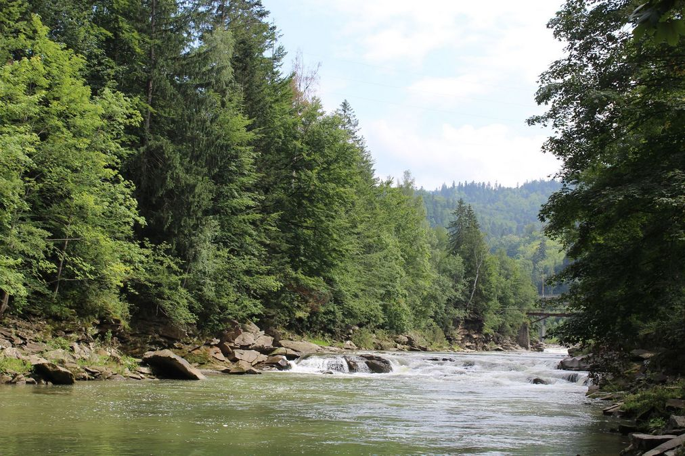
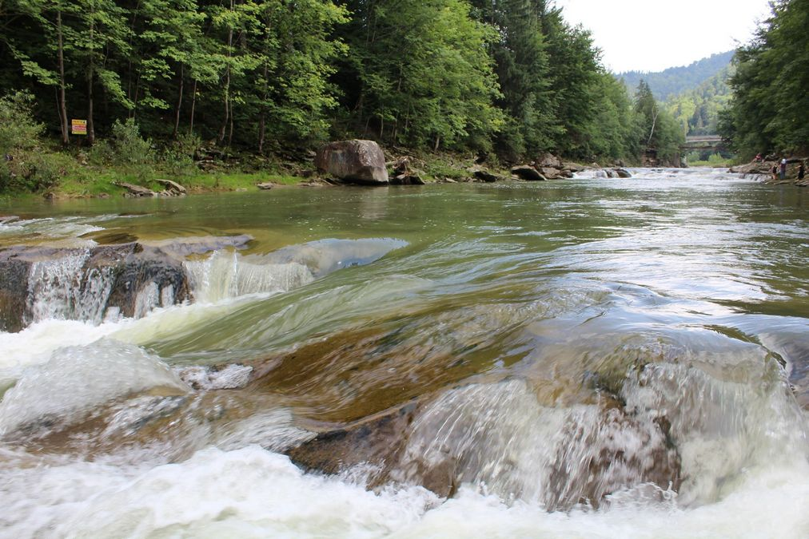
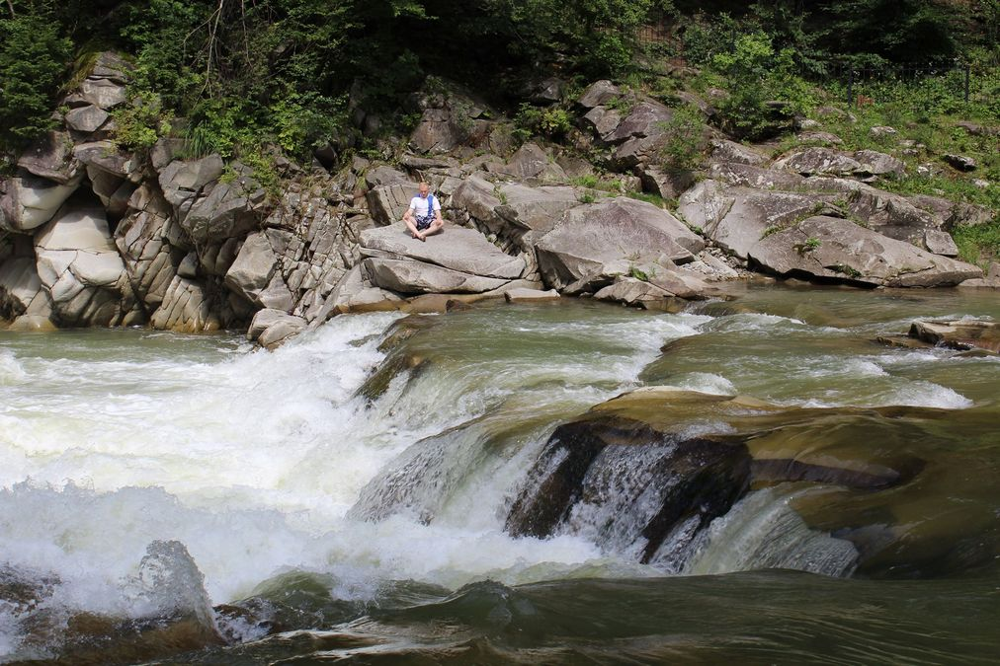
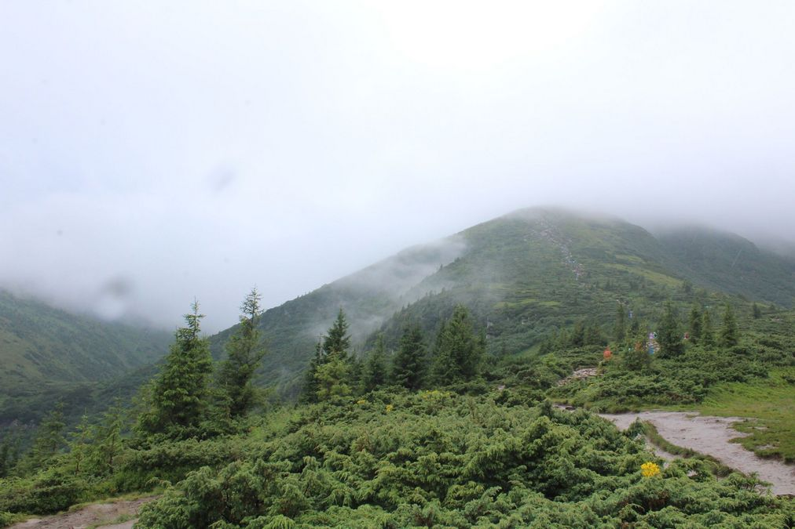

Коли народилися Карпати, і хто їх так назвав?
Назву “Карпати” вперше згадав Геродот у V столітті до нашої ери. Ішлося про річку Κάρπις
(Карпій), що впадає в Дунай. У 105 році імператор Траян приєднав Південні Карпати до Риму. Римське
панування
тривало до 271 року, тоді Карпати відкрили для світу. Карпатську гірську систему виокремив вперше
Птолемей.
-
Найменування “Карпати” давнє. Коріння простежується в середземноморських мовах, якими
послуговувалися тут до приходу носіїв індоєвропейських мов. Дослідники розходяться в думках щодо
походження
назви наших гір. Одні вважають, що назва виникла від ймення фракійського племені карпи, що
проживало на
території Передкарпаття у III-IV столітті нашої ери. Інші – що це слово має корені з
доіндоєвпропейського
слова “kar” – камінь (кам’яні гори).

Карпати – це не лише Україна
Карпати – один із головних вододілів Європи, що розташований між Балтійським і Чорним морем. Австрія,
Чехія,
Словаччина, Польща, Румунія, Угорщина, Сербія та Україна – це країни де простягаються Карпати.
Більше 250 кілометрів – протяжність хребтів Карпат лише на Україні
Площа гірського масиву 24 тисячі квадратних кілометрів, а ширина приблизно 100 кілометрів.
Карпати. Сотні легенд
Карпати багаті не лише на краєвиди, смачні страви та гостинність. Такі місця завжди оповиті сотнями
легенд. Зрозуміти де вигадка, а де правда – важко.

Наприклад, за легендою Говерла – це ім’я дівчини, а гору назвали так через історію нещасливого кохання.
Селянин на ім’я Прут блукав горами надвечір. Зустрів він у горах доньку короля – Говерлу. Між ними одразу
зародилося кохання, але батько Говерли, король гір, заборонив їм зустрічатися через соціальну нерівність
закоханих. Донька не хотіла коритися батькові, тоді він перетворив дочку на гору. Прут довго шукав свою
кохану, а потім сів під горою та заплакав. Сльози хлопця розлились та стали річкою – Прутом.

Карпати. Не Говерлою єдиною
Висоти, що переважають у Карпатах – 800-1200 метрів. Найбільша ж висота становить 2 655 метрів – це гора
Герлаховський пік, що в Татрах на території Словаччини. В Україні ж найвища точка 2 061 метр – Говерла.
Гора, на яку важко піднятися та неможливо забути.
Окрім Говерли в Україні є десятки прекрасних гір і полонин на кшталт Бребенескулу, Петросу, Близниці та
багатьох інших. Почитавши міти та цікаві факти про Карпати, вам точно захочеться відвідати їх та
підкорити Говерлу, незалежно від того чи бували ви там раніше.

Які Карпати ви хочете побачити?
Заквітчані чи засніжені, зелені чи жовтогарячі? Усе залежить від того, який відпочинок ви ставите на
меті: походи горами під пекучим сонечком чи можливість зайнятись гірськолижним спортом, відвідати спа.
Зима, початок весни
Переваги:
- – Можливість стати на лижі, сноуборд та інші зимові види спорту.
- – Шанс провести зимові свята родиною в новому місці.
- – Спа, чани тощо.
- – Наприкінці сезону діють переконливі знижки.
- – Можливість піти в похід (раджу робити це з досвідченими гідами).
- – Проживати в готелі, приватних будиночках або гірськолижному курорті.
Недоліки:
- – Зимова поїздка буде однозначно дорожчою (оренда або купівля екіпірування, харчування та
проживання).
- – Зекономити можна проживаючи у приватних будиночках (у вас точно є знайомі, які радять жіночку, в
якої затишно та смачно).
- – Потрібно бути обачнішим аніж будь-якої іншої пори року (холод, заметілі, зсуви тощо).
-
Тому, збираючись у похід, необхідно мати із собою наплічник від 35 літрів (якщо похід без
ночівлі), у якому повинні бути:
- – Сірники або запальничка в упаковці, що не промокає, та папір (для розпалювання вогню).
- – Ліхтарик і батарейки для нього.
- – Мобільний телефон і павербанк (на морозі телефони часто відмовляються працювати, якщо
вдома є додатковий телефон візьміть його із собою).
- – Мапа місцевості та компас.
- – Змінні рукавиці та шапка.
- – Перекус – сухофрукти, печиво, пряники, шоколад.
- – Термос або термочашка з чаєм (краще солодким).
- – Ліки (необхідні вам у поході).
- – Рятувальне покривало (багато місця не займає, а придбати можна в туристичних крамницях).
Обов’язково проконсультуйтесь перед походом із гідом щодо необхідних речей та залишайте дані про
місце куди збираєтесь у похід комусь зі знайомих.
Весна, літo
Переваги:
- – Походи з наметами (початківцям раджу ходити з досвідченими гідами).
- – Дозволені підйоми на Говерлу.
- – Довший світловий день.
- – Проживання в готелях та будиночках дешевше.
- – Великий вибір туристичних місць, куди можна піти.
- – У залежності від сезону це ще гриби, ягоди й інші можливі розваги.
- – Зіплайн, рафтинг, джипінг, кінні прогулянки тощо.
Недоліки:
Необхідно переглядати погоду, але іноді вони промахуються, тому носити із собою дощовик – найкраще
рішення.
Осінь
Переваги:
- – Фотосесії у цю пору особливо прекрасні (можна зробити подарунок собі або близькій людині).
- – Туристів менше, аніж влітку.
-
Лайфхак: у дорогу взяти кілька гумок для грошей. Такі гумки допоможуть прикріпити телефон та
зробити круті фото без сторонньої допомоги.
Недоліки:
- – У період з жовтня до травня підйом на Говерлу дозволений лише альпіністам.
-
Пам’ятайте, що походи будь-якої пори року мають бути продуманими, при собі необхідно мати всі
речі, що допоможуть в екстрених ситуаціях.

Поради щодо підйому на Говерлу
Якщо ціль вашої поїздки – підкорити 2 061 метр, тоді:
- – Краще розташовуватись в населених пунктах, які ближче до Говерли.
- – Коли обираєте поїздку автостопом, то уважно вивчайте маршрут і відправляйтеся в дорогу не пізніше 7
ранку.
- – Краще розташовуватись в населених пунктах, які ближче до Говерли.
- – Добре вивчіть прогноз погоди.
- – Раджу одягати найзручніше взуття.
- – Перші підйоми краще здійснювати з гідом (якщо вирішили без – обов’язково уважно дивіться під ноги,
майте при собі мапу та звертайтесь до вказівників).
- – Групою краще (дешевше обійдеться дорога та гід і це надійніше).
- – Біля підгір’я можна взяти в оренду палиці для скандинавської ходьби та зручні черевики, купити
дощовик (тому раджу брати гроші про запас).
- – Сувеніри краще купувати після сходження.
Могутні, загадкові, оповиті мітами Карпати будуть завжди раді туристам. Коли б ви туди не приїхали – там
неймовірно. Тому любіть, відвідуйте та досліджуйте українські місця сили.
Нехай удача завжди буде з вами.